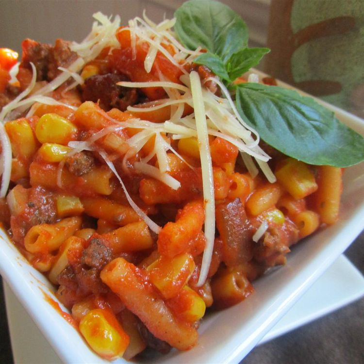

Home
Cowboy Mac and Cheese Recipe

Description
This cowboy mac and cheese includes a hearty combination of lean ground beef, macaroni, and cheese, plus a tomato sauce that will make you jump up and click your spurs together. It's a favorite meal of any cowboy.
Ingredients
- 2 (7.25 ounce) packages macaroni and cheese
- 1 pound extra-lean ground beef
- 1 small onion, chopped
- 1/2 cup butter, cut into pieces
- 1/2 cup milk
- 1 (10 ounce) can whole kernel corn, undrained
- 1 (10 ounce) can tomato sauce
- 1 (6 ounce) can tomato paste
- 3 tablespoons grated Parmesan cheese (Optional)